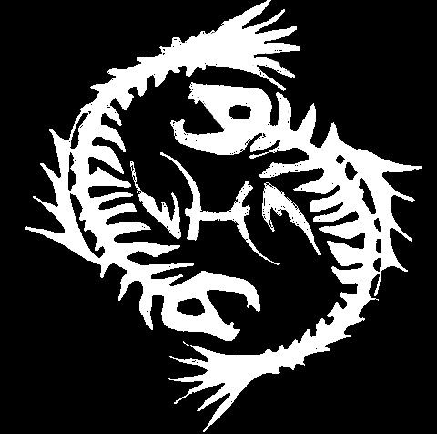

Uyanık Göz
Histoire
Uyanık Göz, « l’Œil éveillé », est la plus ancienne mafia d’Izmir. Arménienne à l’origine, elle possède à ce jour une grande influence turque chez ses membres. Le clan Brujah possède des liens avec eux depuis 1810, perdus un temps puis retrouvés au milieu du siècle dernier. Le nom de Uyanik Goz revient frequemment dans les jounaux, et ils sont un groupe connu des forces de l'ordre.
Artoun Atchk
À l’origine, Uyanık Göz n’a rien de l’organisation criminelle que décrivent aujourd’hui les journaux : c'est principalement une affaire de familles. De puissantes familles arméniennes de Smyrne, que la ville cantonne à des postes administratifs sans éclat, s’en servent pour accéder aux comptes et aux marchés de la ville et en liquider les fonds. Ce réseau, qui tient le port et Bayraklı, prend le nom d’Artoun Atchk (Արթուն Աչք), « l’œil éveillé ». Dès 1810, les Brujah possèdent des liens avec la famille, et l'utilisent pour organiser leurs affaires et obtenir un poids dans la société criminelle. C'est à la seconde moitié du 19ème siècle que Sélim, le sheriff de la ville, étreint Narek, un héritier d'une des familles. Il lui donne alors le contrôle du clan sur le groupe, souhaitant laisser plus de liberté à Artoun Atchk dans ses affaires.

L’incendie, puis un nouveau nom
En 1919, la mort de Narek aux mains du Sabbat fait perdre aux Brujah leurs liens avec la mafia. En 1922, durant l’incendie de Smyrne, elle subit de lourdes pertes. On parle peu des années qui ont suivi car la mafia se retranche. Les rares articles de presse qui les évoquent restent vagues : certains parlent d’une dérive religieuse et sectaire. On n’en retrouve aucune trace aujourd’hui, mais le sujet revient routinement dans les médias lorsque leur nom est mentionné.
En 1950, les Brujah retrouvent leurs liens avec la mafia via Anna et l’associent officiellement à leur Clan. Elle est rebaptisée d’un nom plus turc, Uyanık Göz, qui n’est que la traduction de l’ancien, mais qui permet de se distancer des accusations. Depuis, les Arméniens y perdent du terrain génération après génération au profit de nouveaux venus turcs. De mafia de familles suivant ses propres codes, elle devient un danger grandissant, et les forces de l'ordre qualifient leurs actions de « trop aléatoires ».
Ce que dit la presse
Les journaux d’Izmir décrivent un réseau qui dépasse largement Bayraklı et la ville : drogue et armes y circulent « sans frontière ». Les saisies n’aboutissent jamais à rien, et les dealers pris en flagrant délit sont relâchés au bout de quelques jours. Au fil des décennies, la presse a aussi signalé des disparitions et des corps repêchés dans la baie, dont les affaires sont classées, parfois en quelques semaines. Les quartiers où la mafia siège sont décrits comme des zones où les patrouilles ne passent plus et où les plaintes ne sont pas enregistrées.
La mafia est aujourd’hui divisée. D’un côté, de jeunes Turcs souvent pauvres et peu instruits, de l’autre, les descendants des familles arméniennes, qui prennent leurs distances avec un héritage devenu encombrant. Des règlements de comptes éclatent régulièrement entre les deux camps.